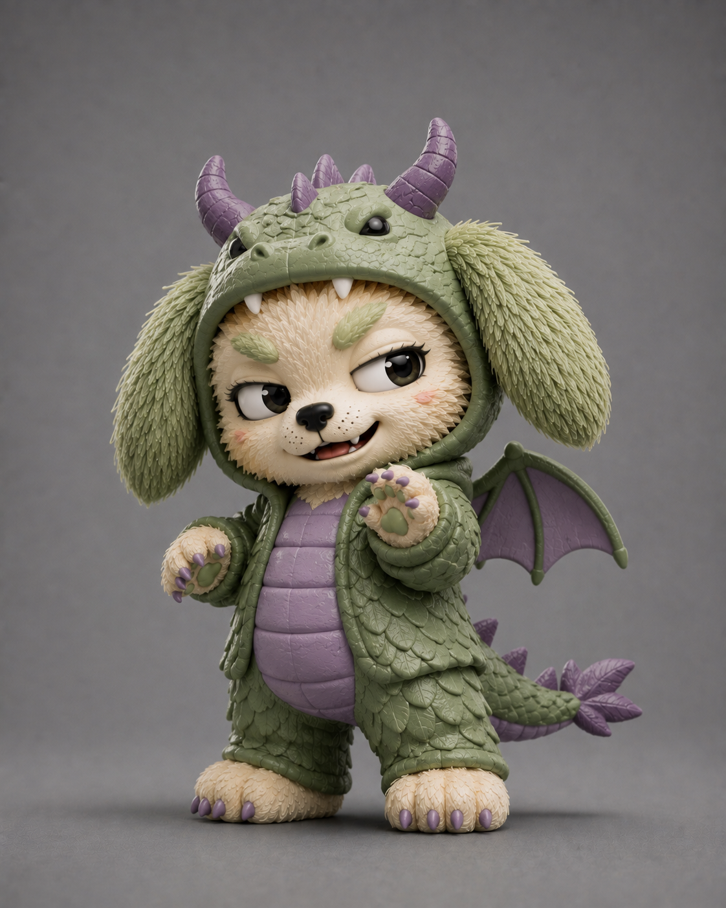

Como cuidar tu coleccion
Manten las figuras lejos del sol directo para conservar sus colores. Elimina el polvo con un pano suave y seco, sin productos agresivos.
Una repisa cerrada ayuda a protegerlas. Si guardas sus cajas, mantenlas secas y sin peso encima. Ordenar por serie tambien facilita saber que personajes faltan.
Volver al blog